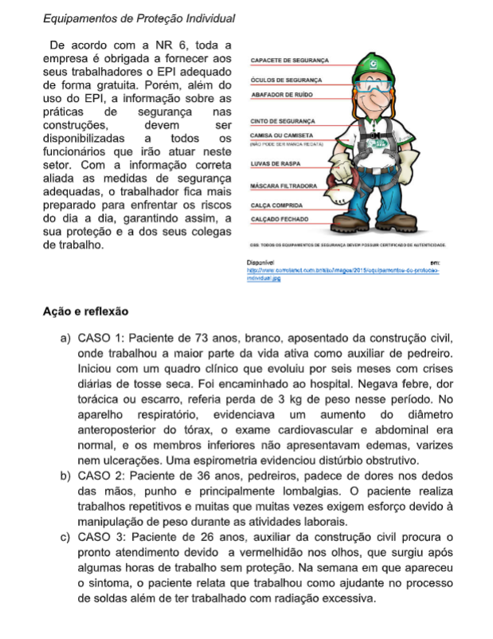
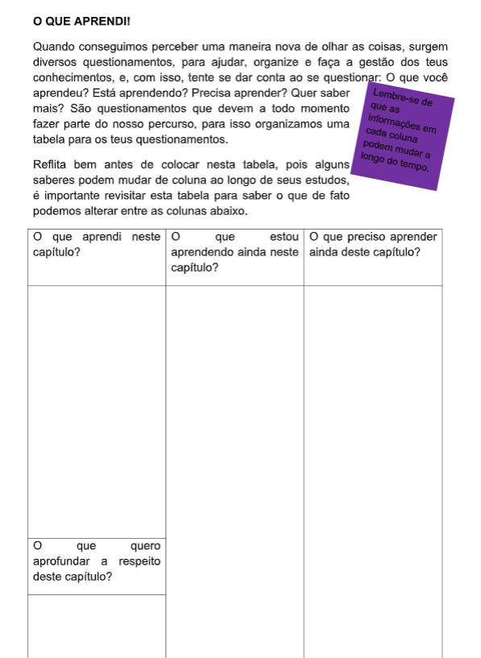
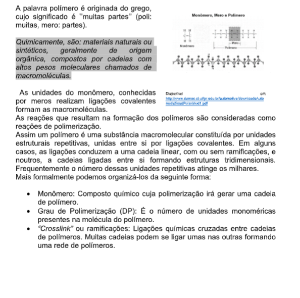

Capítulo 3
Indústria Coureiro calçadista e o tratamento de resíduos industriais
Qual a relação dos resíduos químicos com a Industria coureiro calçadista? Como podemos classificar os resíduos oriundos da indústria calçadista e assim mapearmos os processos adequados para o tratamento? Como separamos as misturas oriundas de um processo industrial?
CONTEXTUALIZANDOO Brasil é um dos maiores produtores de couros do mundo, destacadamente pelo potencial engendrado pelo rebanho bovino que possui, além da indústria calçadista, estando atrás apenas dos Estados Unidos, da Rússia, da Índia e da Argentina (PACHECO, 2005). Este fato exige atenção aos aspectos ambientais, o que se torna relevante e urgente a realização de pesquisas direcionadas a esta dimensão, no sentido de identificar os diferentes impactos negativos causados pelo setor e seus respectivos níveis de importância. Assim se faz necessário realizarmos um mapeamento de possíveis processos que possam contribuir para o tratamento dos resíduos buscando minimizar o impacto ambiental. 
(Re)construindo ConceitosDependendo do processo de produção, as indústrias produzem os mais diversos tipos de resíduos. Para iniciarmos nosso estudo, você precisa conhecer um pouco sobre substâncias puras, misturas, processos de separação de misturas, para então entendermos os processos de classificação de separação dos resíduos. A Química é a ciência que estuda a matéria e suas transformações. Esta matéria pode ser constituída por elementos, substâncias puras, misturas. Basearemos nossas atividades em questionamentos.
1ª Pergunta: Mas qual a diferença entre elementos, substâncias puras, misturas?Com a intenção de responder a este questionamento, apresentamos um esquema que organiza e diferencia os conceitos, veja abaixo:
 